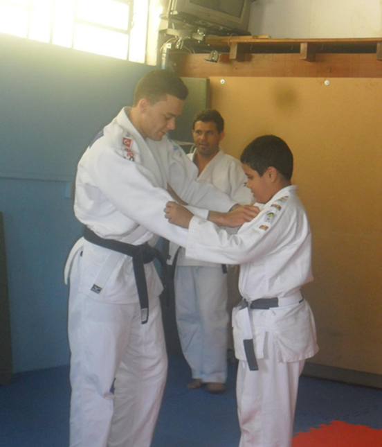
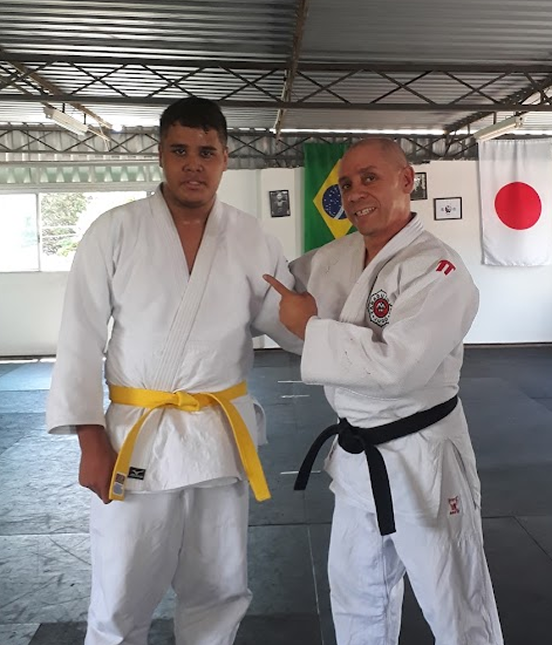

Meus Senseis

Sensei Carlos

Sensei Paulinho

Meu objetivo com a Shosen é despertar, mesmo que minimamente, a curiosidade e o interesse das pessoas em praticar Judô. Quero que cada usuário possa tirar suas próprias conclusões sobre o que é vivenciar essa arte, seja com foco no emagrecimento, fortalecimento por meio de treinos intensos ou simplesmente como um hobby. Comecei praticando Judô como um passatempo, mas ele se tornou um dos principais responsáveis pelo meu emagrecimento. O Judô vai muito além do físico,ele também desenvolve o controle mental e ensina lições valiosas para a vida. Vale a pena a tentativa para essa prática, garanto que valerá muito a pena e isso pode ser uma de suas melhores decisões!
Comecei no judô aos 8 anos, sendo uma criança tímida e pouco interessada nos esportes.
Ao decorrer do tempo, acabou se tornando uma das minhas atividades favoritas! Comecei a absorver como o
judô
passa os ensinamentos e ensina sobre respeito, compaixão, empatia e controle mental e físico. Participei
dos treinos de 2012 até 2020,
quando acabei me retirando dos tatames.
Fui um dos melhores alunos de meu dojô antigo e cheguei até a
faixa laranja, quase sendo um atleta
federado também.
A arte que é praticar esse esporte mostra o quanto isso pode mudar a vida de uma
criança que é mais fechada e sem ânimo.
Cada queda e golpe aplicado nos mostra o quanto cada um é forte e consegue seguir em frente, aprendendo
com cada mínimo detalhe que as pequenas lutas
diárias podem nos ensinar.
Com o tempo, as medalhas, troféus e competições no Judô perdem seu valor. As mais lembradas quase sempre serão a primeira e a última, são essas que costumam carregar o maior significado (sem desmerecer outras que foram intensamente disputadas). No entanto, o que realmente permanece são as lições de cada queda, cada derrota e cada desafio enfrentado. No Judô, a única derrota real é não aprender com nossas fraquezas, dificuldades e quedas. Levantar após uma queda no tatame e continuar lutando revela a verdadeira força de um judoca: a capacidade de enfrentar desafios com coragem e seguir em frente. A maestria da resiliência e o foco são os principais pilares que tornam cada judoca único. O que eu mais guardo é o ensinamento que cada competição me passou, a torcida que eu tive nos tatames, a atmosfera de competir, tudo tornou cada momento único e que levarei cada lembrança para sempre.
O Judô é muito mais do que um esporte, é uma filosofia de vida.
Cada treino, cada queda e cada superação moldam não apenas o corpo, mas também o caráter de quem
pratica. Ao longo dessa jornada, aprendemos que vencer não é apenas subir no pódio, mas levantar após
cada desafio, com mais força e sabedoria.
A Shosen nasce com o propósito de compartilhar essa essência do Judô: disciplina, respeito, resiliência
e evolução constante.
Se essa arte e esse projeto conseguir tocar sua vida da mesma forma que transformou a minha, então já terei cumprido meu
papel.
Que cada um possa trilhar seu próprio caminho no tatame e fora dele com foco e garra.
Desejo boa sorte para cada um que estiver lendo isso aqui, e que você tenha uma vida muito boa e que nunca desista
de superar seus problemas, você é forte e talvez não saiba disso.
Siga em frente e continue na busca de conquistar seus
sonhos.